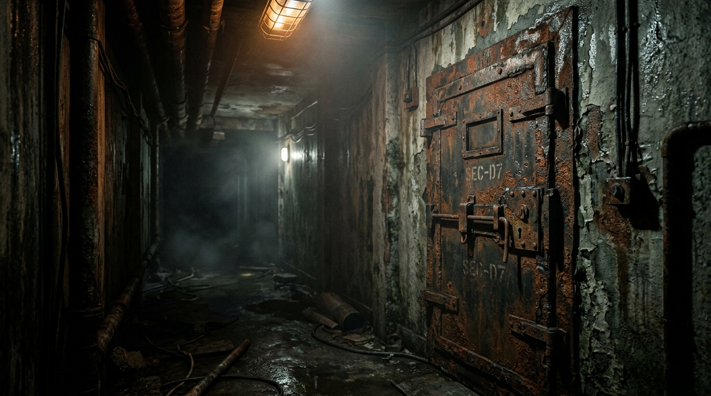
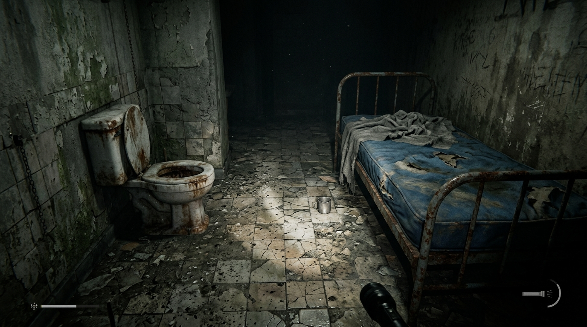
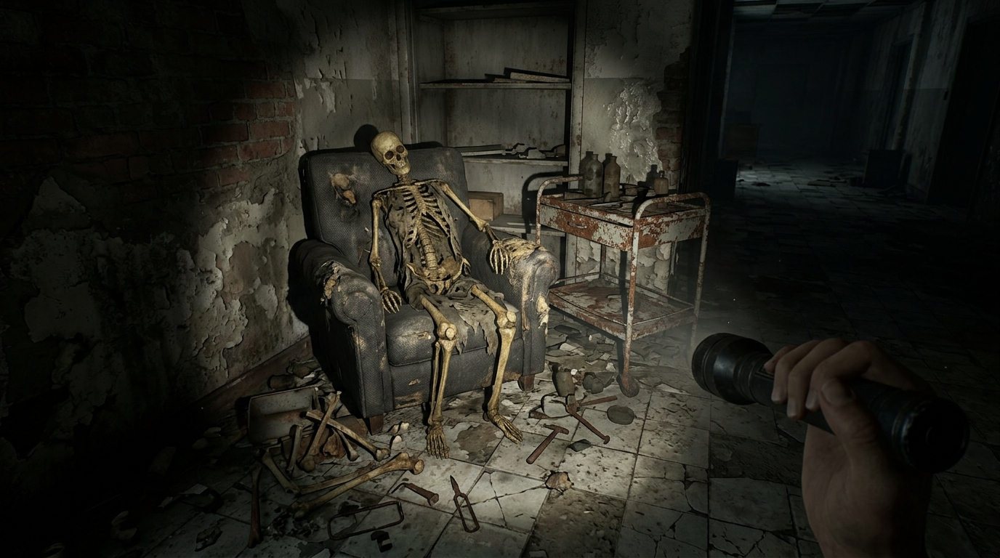
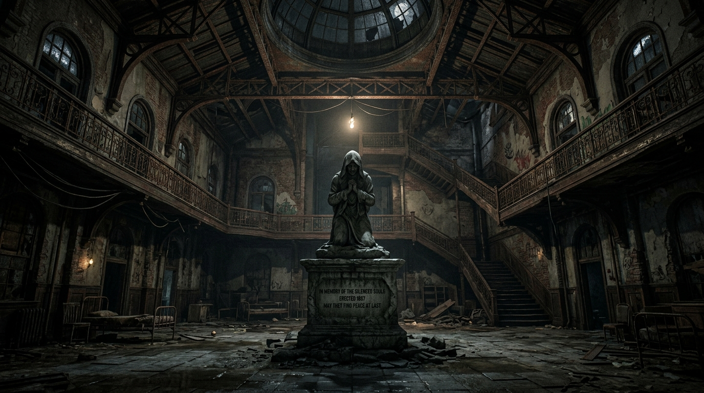

There is no turning back.
You awaken with no memory inside a sprawling, decaying abandoned asylum. The air is heavy with dread, and the only light guiding you comes from the flickering bulbs above and the dim beam of your headlamp.
In The Last Corridor, you must navigate deadly electrical traps, scavenge for resources to manage your inventory, and survive the horrors lurking in the dark. Every shadow in the asylum hides a secret, and every door could be your last. Will you find the exit, or become another permanent resident?

Your headlamp is your only lifeline. Scavenge for batteries and manage your limited inventory to survive the darkness.
Restore power to generators and navigate electrical traps. One wrong move in the asylum could be your last.
Something is hunting you. Beware of the morgue boxes and prepare for terrifying encounters that will test your nerves.


